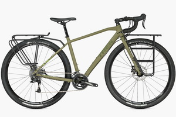
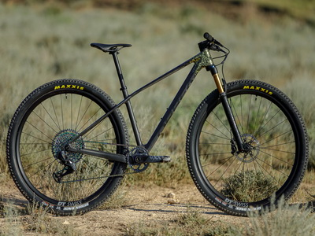

Main types of bicycles
Mountin Bikes

A mountain bike or mountain bicycle is a bicycle designed for off-road cycling. Mountain bikes share some similarities with other bicycles, but incorporate features designed to enhance durability and performance in rough terrain, which makes them heavy. These typically include a suspension fork, large knobby tires, more durable wheels, more powerful brakes, straight, extra wide handlebars to improve balance and comfort over rough terrain, lower gear-ratios for climbing steep grades and sometimes rear suspension to really smooth out the trail as well as dropper-posts to quickly adjust the seat height
Road Bikes

The term road bicycle is used to describe bicycles built for traveling at speed on paved roads. Some sources use the term to mean racing bicycle. Other sources specifically exclude racing bicycles from the definition, using the term to mean a bicycle of a similar style but built more for endurance and less the fast bursts of speed desired in a racing bicycle; as such, they usually have more gear combinations and fewer hi-tech racing features. Certain of these bicycles have been referred to as 'sportive' bicycles to distinguish them from racing bicycles.
Touring Bikes
A touring bicycle is a bicycle designed or modified to handle bicycle touring. To make the bikes sufficiently robust, comfortable and capable of carrying heavy loads, special features may include a long wheelbase (for ride comfort and to avoid pedal-to-luggage conflicts), frame materials that favor flexibility over rigidity (for ride comfort—though frame flexing can eventually lead to metal fatigue and frame failure, so newer frames are rigid), heavy duty wheels (for load capacity), and multiple mounting points (for luggage racks, fenders, and bottle cages).
Some subtypes of bicycles
Gravel Bikes

Gravel bike is, in fact, a road bike adapted for use on dirt roads. Since the trend for such bikes is ascending and not all marketers have yet come to a common standard and name, such bikes can be found from different manufacturers also under the name endurance bike, performance road bike or adventure bike. The gravel bike has taken the relaxed geometry of road endurance bikes, but with a reinforced frame and fork that allows for the installation of powerful tires, usually from 35C and more. Also, these bikes are usually equipped with disc brakes. The gears and cassette are more like a mountain bike. The frame has all the necessary holes for attaching water bottles, fenders, on some models, and the trunk
Cross Country Mountain Bikes
Cross-country bicycles are some of the lightest mountain bikes, typically between 7 and 16 kilograms (15 and 35 lb). They usually feature suspension forks in front and sometimes have suspension in the rear. In both the front and rear, most XC bicycles have approximately 100 millimetres (10.0 cm; 3.9 in) of suspension travel, although some riders prefer 125 to 150 millimetres (12.5 to 15.0 cm; 4.9 to 5.9 in) of travel as bicycle frame strength and technology advance. The geometry of the frames generally places the rider in a little more upright position than on a road bicycle but much less than on a downhill bike. Bicycle helmets are often used for cross-country riding. However, XC riders only rarely wear full-face helmets and do not wear the full body "armour" employed by downhill riders. Cross-country cyclists are more prone to injuries than road cyclists; however, the injuries sustained by XC riders are usually not as severe